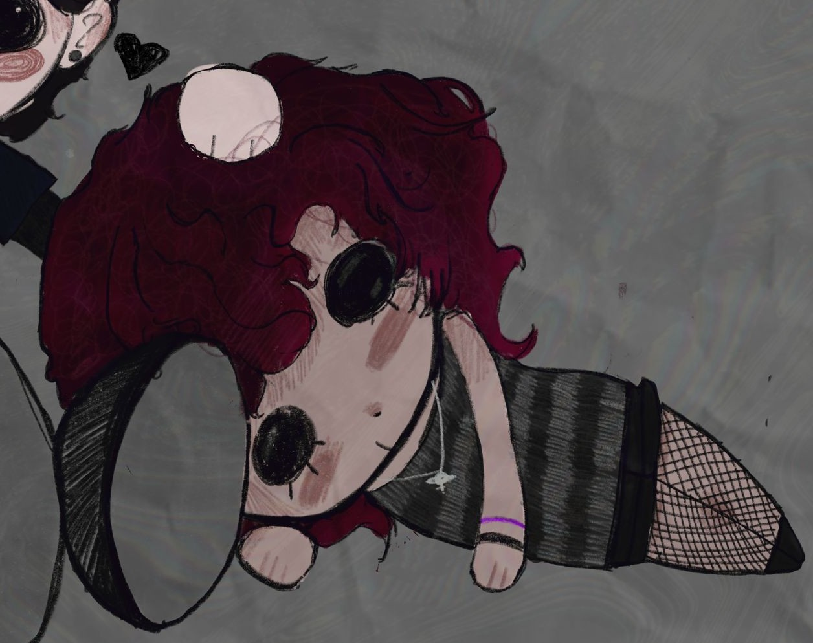

Nome: Yara Dakir
Anni: 14
Data di nascita: 24/10/2011
Caratteristiche: Ragazza solare, bellissima e stupenda sotto ogni aspetto. Ho già detto che è bellissima e meravigliosa? Sa anche disegnare molto bene, scrivere canzoni e poesie e sa fare robe fighissime all'uncinetto!
Nome: Nicholas Fiorani
Anni: 16
Data di nascita: 31/08/2009
Caratteristiche: Sa programmare e fare musica effettivamente carina ogni tanto!